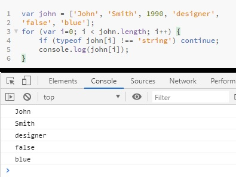
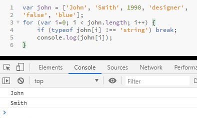
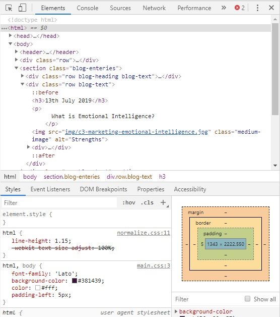
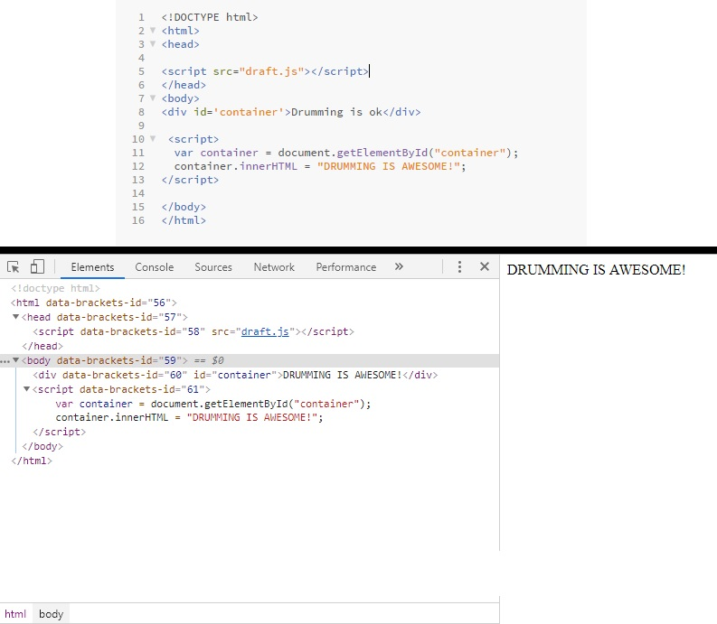
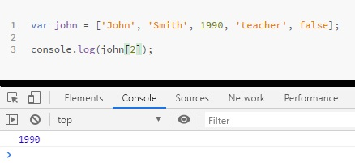
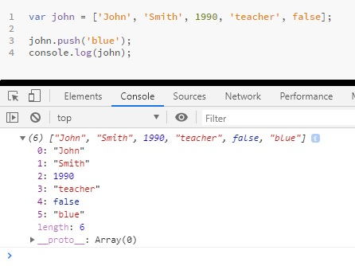
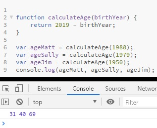
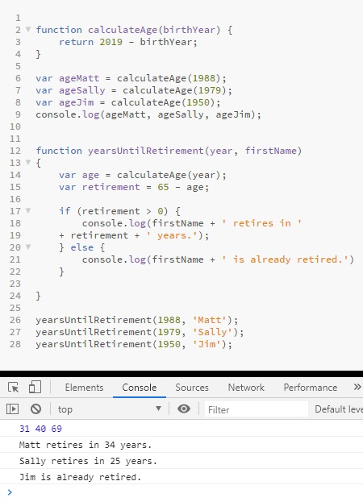

Matthew Devonport

Follow His Journey
HTML is like the base of a pizza. You need a good base to make a good pizza. This is where all of your writing and foundations of the website are stored. With the foundations that you write within the HTML file lay the foundations for CSS to really give the webpage 'flavor' which is what CSS provides.
CSS is like the toppings of the pizza. The styles (or ingredients) you use really bring the website (or pizza) to life and there are almost endless possibilities or ideas to use to create it. The styles help create color (like background color), where pictures/text/objects are placed as well as little effects to bring the website to life (which I like to relate to as putting on the seasoning on the pizza).
This is what happens when HTML and CSS combine!
Loops are a very important aspect of any programming language. The way that they flow means that we can continue an operation until something is 'true' or 'false' or if a condition has been met. We can use this in an example of gambling (which I don't endorse by the way but it is an example!). Let's say that we are playing 21 or blackjack and we start off with $20 with the goal to win either $100 or go broke. We can show this in a loop with this flow chart:
For Loops
For loops are the most common and simple form of loops and can be very useful to use in coding.
For example, if you have a very repetitive task. Instead of writing 10 (or whatever) lines of the same code you would instead write a loop. This basically means that we can
automate repetitive tasks using a loop.
The example below shows code that we could have written 10 times in comparison to using a 'for' loop:
We start example 2 of with a for loop. A for loop for has three parts. It has the inital value of counter, a condition that is evaluated before each loop iteration and finally a counter
update after each iteration.
Initial value of counter: i = 0.
Condition that evaluated before: i < 10 (if this statement is true, then the loop will actually run).
Counter update: i++.
From there all we need to do is print the console log and this shows the result that we want in the console log.
Because 0 to 9 are less than 10, the statement is true and it will print this in the console.
Because 10 is not (it is = to), the statement is false and will now exit the loop!
You can do all sorts of math operations to achieve what you would like in these loops.
We start example 2 of with a for loop. A for loop for has three parts. It has the inital value of counter, a condition that is evaluated before each loop iteration and finally a counter
update after each iteration.
Initial value of counter: i = 0.
Condition that evaluated before: i < 10 (if this statement is true, then the loop will actually run).
Counter update: i++.
From there all we need to do is print the console log and this shows the result that we want in the console log.
Because 0 to 9 are less than 10, the statement is true and it will print this in the console.
Because 10 is not (it is = to), the statement is false and will now exit the loop!
You can do all sorts of math operations to achieve what you would like in these loops.
Arrays can also be used in for loops (I will talk about arrays later in the blog).
With this example we have the initial array value starting at 0. The condition is the length of the array (which is actually 5 but .length will automatically count that) and
the counter update is i++ which is the increment operator. We again then print in console with the two variables to get the result we want.
While Loops
Another type of loop is the 'while' loop.
The difference between the for and the while loop, is that the while we only have the condition. We first print the variable and the counter update after printing the console
log in the code.
Most people find that for loops are better to use than while loops for coding and as you can see with this example they print the same result.
Break and Continue
Within both of these loops you can continue or break the loops.
Continue means to pull out certain values in an array (that could be for example a string) and when it does finds a value that is not a string, it ignores it and continues onto the next value. As you can see here, the console prints all the values except 1990 and because it is a number, not a string. The code here means that when it came across 1990, it ignored thatnumber but then continued on to the next value that was a string to print that
Break means that once it reaches that value that the loop will 'break' or 'stop' and print only the values up until that. As you can see it only prints 'John' and 'Smith' due to why I explained before. You can also see that it's very similar in writing the continue and break codes by just replacing one another in the line.
You can also loop backwards by using some basic math operations. I can show this below with our initial for loop:
By using the correct math operators in the loop we were able to loop backwards.
The DOM (Document Object Model) is an API (Application Programming Interface) for the HTML and XML Documents. It allows programs and scripts to dynamically access and update the content, structure and style of a document.
Does this mean that the code in the DevTools is the DOM?
When you're looking at anything in DevTools (the content that looks like HTML), this is a visual representation of the DOM. It will look almost exactly like the same as the HTML file, although it isn't always the same.
Why is that?
One possibility is that there are mistakes in your HTML and the browser has fixed them for you. For example if you have a <table> element in your HTML and leave out the required <tbody> element. The browser will just insert that <tbody> for you. It will be there in the DOM, so you'll be able to find it with JavaScript and style it with CSS, even though it's not in your HTML. The most likely case and the reason is because Javascript can manipulate the DOM. This example below shows how that can work:
You can see that in the HTML file the id 'container' has "Drumming is ok". This isn't a statement that we agree with, so we are going to change that with Javascript! We can do this by creating a variable which we call container to make it simple and then get the id element from the HTML which is called "container". From here we then use the variable container with innerHTML (which inserts content to a the id of 'container') which allows the browser to show the true statement:
Arrays access an element by index, not by a name. For example, we access the second element by using square brackets ([ ]) and then the index number of the element we want with 2 being 1990.
One benefit of using arrays is that we can use functions like 'push' with arrays where we can't with objects. This 'push' example allows us to add more elements to the array.
Objects access an element by name, not by an index
We can use objects to group together different variables that belong together that have no particular order. Each of these variables are called the 'key'.We first declare the variable 'John' and then a object literal (or curly brackets { } ) which is basically a container in which we can fill with variables which are called
properties.
We then can declare our key value pairs which in this case are: John, Smith, 1990, an array (which is Jane, Mark, Bob, Emily. This shows that you can use arrays
in objects and you can actually do the same with objects in arrays), teacher and finally false.
We can then print to the console log in two ways.
The variable (john) a full stop (.) and then a key ('John') to print that particular element. Alternatively you can print the variable (john) and the key as a string
(' ') in square brackets.
You will achieve the same result even if the element is not a string.
If there is a piece of code that we want to run many times, we can put that into a function instead of having to write it over and over again.
Functions are like containers that hold some lines of code and we can pass arguments through them to then return us a result.
We first write the function itself and then give the function a name. We can pass arguments into functions. This is kinda like having a variable inside a function, although
not always necessary. You can also have more than one argument in a function (I will explain later).
From there we return something from the function. The name of the function is calculateAge.
The argument inside the function is birthYear.
We then called the function with the current year - a birthYear.
A variable was added to show the year someone was born by using the function and then using the birthYear (1988).
We then use console.log(ageMatt) to show how old Matt will be turning this year and this is displayed in the pages console.
So in short, functions are like a machine that you input some data into, they processes the data and then returns something that you created from the data that you inputted.
I can show this by using the same function from the example above. You can see the power of the function here. Instead of having to write the same code over and over we can create functions to call on to use instead which makes coding much easier for the developer and also can clean up the code a lot. This is on a very small scale. They are extremely useful with large amounts of code as I am sure you can imagine. Above is a simple example of how functions work and how they are useful.
Functions are very important for one of the most important programming principles which is 'DRY' or 'Don't Repeat Yourself'.
I will show with an example below by calculating how many years off retirement (65 years old) each of the examples are.
With the example above, we passed in two arguments (1988 and also 'Matt') which is now called year and firstName inside this new function.
year = 1988
firstName = Matt
How we got the real age in this function is by calling from our last function we created. calculateAge.
Creating the variable age and then using calculateAge with then a new argument called 'year' (which we will finally input below) we will get the correct
age that the person is turning that year.
To then find out the retirement age, we created a new variable called 'retirement' and that is 65 - the variable we created just before 'age'.
We then called on the firstName + ' retires in ' + retirement + ' years.'); into the console log.
To complete this we call on the function we just made and gave the values of 1988 and 'Matt' to the arguments to complete the statement in the console log.
Using multiple functions comes really into light with a similar example to what I showed when we just had one function, although called on this function multiple times.
You can now see the benefit of not only having a function in your code, but having multiple functions to call on. To dig into this a little deeper, we can also use if/else statements in these functions, as to me Jim retiring in -4 years doesn't sound as good as it could. The example below shows an if/else statement in a function:
As you can now see the console log shows that Jim 'is already retired' rather than 'retires in -4 years'. Very easy to do and a far more effective outcome!
